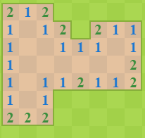

Tutorial
Objetivo del Juego
Encontrar todas las casillas que no tienen una mina debajo sin superar el tiempo disponible. Para esto el jugador tiene dos opciones, marcar todas las casillas que tienen una mina debajo con una bandera o clicar en todas las casillas que no tienen una mina. Si durante este proceso el jugador clica una casilla que tenga una mina será inmediatamente eliminado y debera volver a empezar en un nuevo tablero.
Mecanica del juego
Existen dos mecánicas básicas:
-
-Clic izquierdo: comprueba si hay alguna bomba en esa casilla. Pueden pasar tres cosas:
- Que haya una bomba: el jugador pierde la partida.
- Que no haya una bomba pero si alguna alguna pegada a esa casilla: la
casilla se marcará con
un número, el cual nos indicará cuantas bombas hay en las casillas contiguas a ella. Por
ejemplo, si al clicar en una casilla esta muestra un 2 querrá decir que, pegado a la casilla
que acabamos de clicar, existen 2 casillas con una mina debajo.

- Que no haya una bomba y no haya ninguna bomba cerca de la casilla: esto hará que todas las casillas al rededor de esta se levante hasta encontrar las casillas que si tienen bombas al rededor. 
- -Clic derecho: Marca una casilla.
- Esto unicamente sirve como ayuda visual para el jugador, que puede marcar las casillas sospechosas de tener una bomba debajo. Por ejemplo, en el caso anterior de una casilla con un 4 podriamos, con algo más de información, marcar las casillas en las que creemos que puede haber una bomba y evitar clicarlas por accidente.